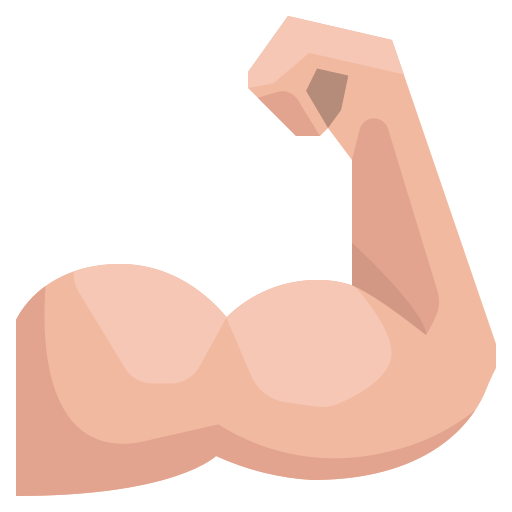
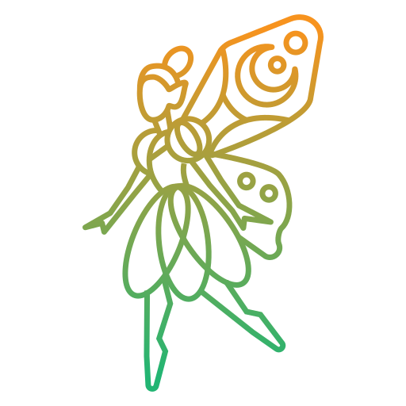
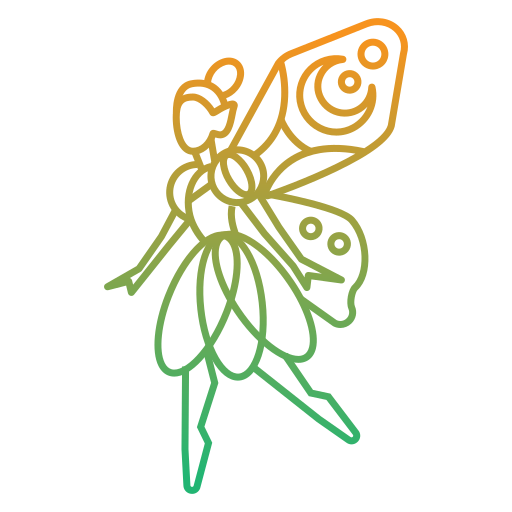

Благодарю тебя, что стала моим проводником
вообще о хрониках акаши, впервые, я узнала от тебя, а как ты
знаешь меня привлекает все новое и тем более мистическое,
после твоего рассказа о них сразу пришло осознание: это мне
надо, я хочу! Очень интересный инструмент самопознания, не
такой как астрология, нумерология или матрица, информация
понятная и увлекательная. Твои голосовые это как аудиокнига
про меня практически все моменты совпали, инструкции по
дальнейшим действиям тоже понятны. Ну а твой обволакивающий
голос это как особый вид медитации
 ведёт нежно и с заботой. Исписала 5 листов,
систематизировала, в некоторых моментах узнала что-то новое,
буду работать. Спасибо, милая, за это путешествие в глубь
моего внутреннего Я.
ведёт нежно и с заботой. Исписала 5 листов,
систематизировала, в некоторых моментах узнала что-то новое,
буду работать. Спасибо, милая, за это путешествие в глубь
моего внутреннего Я.
Хотела тебе завтра сказать, ни не могу терпеть
девАчки мы упали Как ты помнишь я в хроники приходила с
запросом о персональной реализации. Очень долго искала
работу, не было движения по карьерной лестнице, на своей
старой работе я уже выгорела - перегорела и изжила себя. Так
вот изучив твои рекомендации, проработав блоки в чакрах -
МНЕ ПРЕДЛОЖИЛИ РАБОТУ
это какая-то мистика, я сама до сих пор не верю совпадения?!
Не думаю В общем спасибо ещё раз, мой проводник
При чем так легко устроилась на хорошую должность как
будто все так и задумано было. без переживаний
Оля, видимо не зря меня мотало так последний год! И здоровье
и работа, как американские горки «сегодня хорошо, завтра уже
все плохо». Это ужас был какой-то!! И со здоровьем дно
хапнула и по работе. Сегодня проснулась и появилось много
энергии! Продуктивность какая-то начала просыпаться
Раньше сил и намерения к действиям не было совсем. А
сегодня уже переделала кучу дел и энергии вагон! Помимо
домашних дел, купила все для новой работы, распечатала карту
по бизнес стратегии, посмотрела вебинар :восхищение:
Ощущение как будто я летаю!!! Мне надо что-то делать и
появился как спортивный интерес ко всему. Я уже что и как
хочу делать
Привет. Оля, хотела ещё раз написать тебе огромное спасибо
за твой труд
 Cегодня проснувшись в первый раз за много лет почувствовала
себя легко и свободно и в отличном настроении. я так
привыкла чувствовать в себе этот груз и гнет внутри, который
не понимала откуда берется в моей жизни, но после сеанса все
разложилось по полочкам и стали понятны взаимосвязи, откуда
брались определенные чувства, и теперь даже как-то не
понятно, что с этой легкостью то делать, настолько привыкла
к тяжести внутри, что она мне как родная стала
Пространство вокруг меня также трансформируется под эту
легкость и свободу, я прям это чувствую. спасибо, ты
волшебница

Cегодня проснувшись в первый раз за много лет почувствовала
себя легко и свободно и в отличном настроении. я так
привыкла чувствовать в себе этот груз и гнет внутри, который
не понимала откуда берется в моей жизни, но после сеанса все
разложилось по полочкам и стали понятны взаимосвязи, откуда
брались определенные чувства, и теперь даже как-то не
понятно, что с этой легкостью то делать, настолько привыкла
к тяжести внутри, что она мне как родная стала
Пространство вокруг меня также трансформируется под эту
легкость и свободу, я прям это чувствую. спасибо, ты
волшебница

Привет. Хочу поделиться своими ощущениями после встречи. Мне
стало намного легче, и цвета вокруг стала видеть ярче,
существенно ярче, чем было, внутри появился трепет, такое
интересное и странное чувство, предвкушение чего-то хорошего
и радостного.
Оля, благодарю тебя за это откровение!!!!
Ты расширила мое сознание…Я разбор наш переслушиваю 3 дня,
как мантру… убедилась, что делаю все правильно